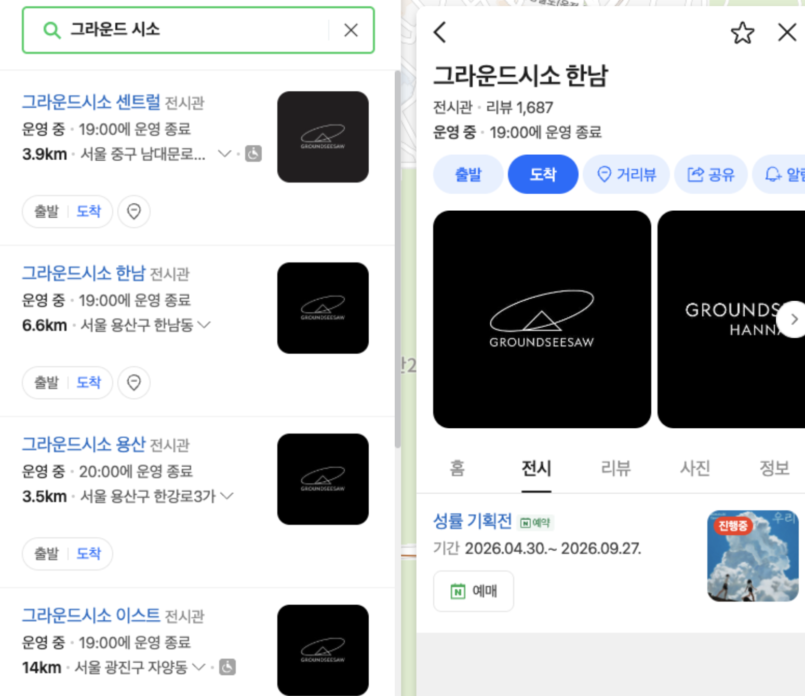
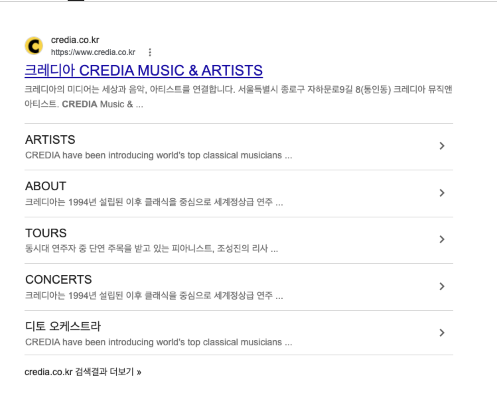

네이버 플레이스
지도에서 찾고 저장으로 다시 보기
오각의 각 공간은 개별로 만들되, 홈페이지 등 연결 정보는 한곳으로 모읍니다.
주의 · 저장 수를 방문 수로 보지 않음
9월에는 손님이 오각을 찾고 방문할 수 있는 길을 준비합니다. 10월부터는 실제 방문 결과를 보며 부족한 안내를 고칩니다.
인구와 세대 숫자는 어디서 먼저 시험할지 정하는 참고 자료입니다. 실제 문화 수요와 재방문은 아직 확인되지 않았습니다.
10월 1일은 오각향 오픈일입니다.
손님이 오각을 찾고 방문할 수 있는 길을 준비합니다
실제 방문 결과를 보고 안내와 연결을 개선합니다
홈페이지는 모든 정보를 한곳에 모아 두는 곳입니다. 다른 곳은 발견·소식·예약 이동을 나눠 맡습니다. 온라인 장소와 채널의 기본적인 세팅을 먼저 진행합니다.
오각의 각 공간은 개별로 만들되, 홈페이지 등 연결 정보는 한곳으로 모읍니다.
사이트 소개와 소식 초안을 준비합니다.
구글 비즈니스를 통해 검색 결과를 업그레이드합니다.
개설 상태, 소개, 홈 화면, 친구 추가 기능을 확인합니다.
프로그램 설명, 예약 상태, 각 온라인 장소로 가는 길을 준비합니다.
네이버 예약을 쓸 수 있는지 확인하고, 안 되면 다른 서비스를 고를 기준을 정합니다.

공간별 네이버 플레이스를 각각 만들고, 각 장소에서 같은 홈페이지로 연결하는 예시입니다. 실제 화면과 기능은 네이버 운영 정책에 따라 달라질 수 있습니다.

구글 검색 결과에 홈페이지의 주요 메뉴가 함께 보이는 예시입니다. 실제 표시는 구글이 정하므로 같은 모양을 보장할 수 없습니다.
저장 수와 친구 수는 다시 찾아볼 가능성을 보여줍니다. 예약은 방문으로 가는 도중의 일입니다. 실제 방문과 재방문을 가장 중요한 결과로 봅니다. 이 셋을 같은 숫자로 합치지 않습니다.
네이버·구글·SNS·카카오
가능성네이버 저장 또는 카카오 친구 추가
가능성최신 프로그램·방문 정보 확인
확인예약 가능 여부 확인
예약확인받은 외부 예약으로 이동·완료
예약실제 방문·관람 완료
방문다음 프로그램 발견 → 재방문
방문네이버 저장과 카카오 친구 추가입니다. 다시 찾아올 가능성을 보여주는 숫자이며 방문 수가 아닙니다.
확인받은 외부 예약으로 이동해 예약을 마치는 일입니다. 방문으로 가는 도중이지 방문 자체는 아닙니다.
실제 방문·관람 완료와 재방문입니다. 첫 90일에는 신청 수보다 실제 방문을 중요하게 봅니다.
17건은 9월에 만들고 확인할 양입니다. 10월부터 매달 17건을 만든다는 뜻은 아닙니다. 자료를 받은 뒤 초안을 만들고, 확인받은 것만 공개 전 검토본으로 둡니다.
네이버 소식 · 카카오 안내 · 공간 소개 · 방문·예약 안내를 합친 9월에 만들고 확인할 양입니다.
손님의 행동마다 다른 숫자로 셉니다. 저장·친구 수를 예약이나 방문 수로, 예약을 방문으로 합쳐서 보지 않습니다.
AI Agent를 통해 오각에 특화된 팀으로 진행합니다. 운영 자동화뿐 아니라 고객 반응과 트렌드에 따라 24시간 빠르게 대응합니다.